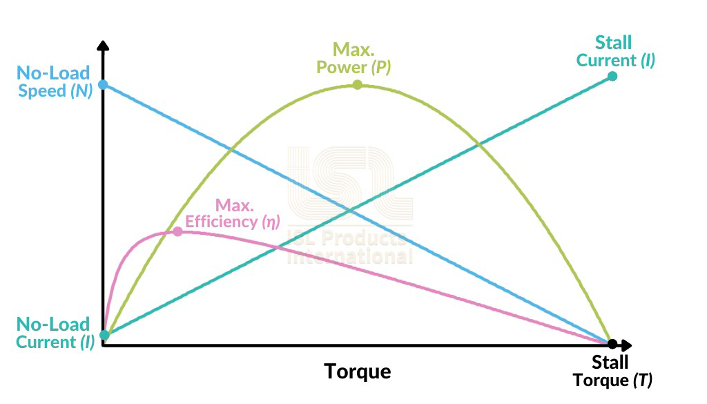

Calculating Motor and Servo Power
Started in the 2023-2024 season, Tech Tips are segments released in the FIRST Tech Challenge Team E-mail Blast. Sometimes the Tech Tips are included in whole in the email blast, but sometimes there is more content than is reasonable in the email blast so partial content is included in the blast with the rest of the content here.
In this Tech Tip we’ll be exploring mechanical and electrical power, why some types of power are calculated differently, and how to use this calculated power to compare servos. This Tech Tip was written and fact-checked with the help of Google Gemini 1.5 Flash using Google AI Studio.
Electrical Power and Mechanical Power
The fundamental concept we need to understand is power. We are generally concerned with two similar but different kinds of power, so let’s look at the two most common types. In a motor, electrical power is the energy supplied by the electrical current flowing through the motor’s windings. This electrical energy is transformed into mechanical power, which is the rate at which the motor performs work by rotating a shaft. Both kinds of power are measuring different aspects of the motor; electrical power deals with the movement of electrical charges, and mechanical power deals with the movement of objects due to forces. Both of these measurements are expressed in the same unit, Watts (W), because power, in general, is defined as the rate of energy transfer or work done. No matter the form of energy (electrical, mechanical, thermal, etc.) the fundamental concept of power remains the same. Even though these two power measurements carry the same unit, they are calculated differently and cannot be used interchangeably (or together!).
Motors and servos are constructed similarly - both are electromechanical devices that convert electrical energy into mechanical energy - but there are big differences in how they’re used. Motors are often used in applications requiring continuous power, such as pumps, fans, and conveyor systems. Motors are typically rated for continuous power output, meaning they can sustain that power level indefinitely without overheating. Servos are commonly used in robotics and precision positioning systems, where controlled movement and precise positioning are essential. Servos are designed for intermittent operation - typically cycling through on/off periods to control movement - and are often rated for their stall torque and no-load speed reflecting their ability to hold a position against a force and how fast they move when unloaded. While electrical power is calculated generally the same for both types of devices, these design and use differences have an impact on how mechanical power is determined.
Both motors and servos calculate electrical power the same, using the standard electrical power formula:
Electrical Power(W) = volts(V) x amps(A)
For example, a typical REV Smart Servo is supplied with 6V when used with a REV Servo Power Module (SPM) or 5V when used with a Control Hub or Expansion Hub. Per the servo’s specs, at 6V the servo will pull at most 2A at stall (when the servo cannot physically move to the position it’s being commanded to). This means the maximum electrical power the servo will consume is 12Watts of power when plugged into the REV SPM and being commanded to a position it cannot reach. The REV SPM supplies 90W of maximum electrical power, so the maximum number of fully-stalled REV Smart Servos the SPM can supply full power to is 7 (90W divided by 12W, ignoring the remainder).
Motors and servos also generally calculate mechanical power similarly.
Mechanical Power(W) = torque (N-m) x angular speed (rad/s)
Mechanical Power for a DC motor generally follows a very specific curve, based on its efficiency, stall current, stall torque, speed, and a bunch of other factors. The general performance curve of a DC motor can be seen in Figure 1.
{kind=link}

Figure 1: General DC Motor Performance Curve
From this we can see that the Peak Power is found at the intersection of 1/2 Stall Torque and 1/2 Speed. Even though a servo is used different than a generic motor, this approximation is still good for calculating the maximum mechanical power of a servo. Simplified, we can use this formula:
Servo Max Mechanical Power(W) = 0.25 x stall torque(N-m) x no-load speed(rad/s)
Using this approximation the REV Smart Servo, when being provided 6V, produces a maximum Stall Torque of 13.5kg-cm (1.33N-m) and a time of 0.14s per 60 degrees of travel (7.48rad/s) yielding an approximate max servo mechanical power of 2.48W.
Tip
It’s important to point out that a high speed motor or servo that is loaded past its maximum power point will actually do worse than a slower motor or servo with the same load. It’s all about getting the maximum mechanical power by operating the motor at the max power point.
Servo Mechanical Power Calculator
One of the most difficult parts of calculating Servo Mechanical Power is working with unit conversions, especially since servo manufacturers use lots of different units. In order to calculate servo mechanical power correctly the speed unit MUST be converted to radians-per-second and the max stall torque unit MUST be converted to Newton-meters. Below is a handy calculator that you can use to automatically perform the necessary conversions and calculate Servo Mechanical Power (Thank you to Orion DeYoe for providing this tool).
Tip
For Speed, use the radio button to choose the unit type that the manufacturer has provided - for most servos this will be listed in a period of time per 60 degrees (such as with the REV Smart Servo example) or perhaps the manufacturer may provide an angular velocity, such as rotations-per-minute (RPM). Enter the no-load speed value and unit as the manufacturer has provided.
For stall torque, provide the value and select the unit as specified by the manufacturer. If the manufacturer merely provides kg, assume kg*cm.
The calculator automatically recalculates on any changes, there is no button to press in order to trigger a calculation.
Common Servo Mechanical Power Values
Here is a handy table of some common servo mechanical power values:
Description |
Speed |
Torque |
Stall Current |
Max Power |
Cost ($USD) |
|---|---|---|---|---|---|
0.18 s/60° |
6 kg-cm |
1.2 A |
0.86 W |
$29.50 |
|
0.14 s/60° |
13.5 kg-cm |
2.1 A |
2.48 W |
$32.50 |
|
0.09 s/60° |
9.3 kg-cm |
2.5 A |
2.65 W |
$33.99 |
|
0.075 s/60° |
7.8 kg-cm |
2.2 A |
2.67 W |
$63.79 |
|
0.20 s/60° |
300 oz-in |
2.5 A |
2.77 W |
$33.99 |
|
0.046 s/60° |
5 kg-cm |
2.7 A |
2.79 W |
$24.99 |
|
0.043 s/60° |
4.7 kg-cm |
2.5 A |
2.81 W |
$33.99 |
|
0.20 s/60° |
22 kg-cm |
1.7 A |
2.82 W |
$34.00 |
|
62 RPM |
20 kg-cm |
1.8 A |
3.18 W |
$23.99 |
|
0.05 s/60° |
7 kg-cm |
2.7 A |
3.59 W |
$30.00 |
|
0.20 s/60° |
35 kg-cm |
4.0 A |
4.49 W |
$52.95 |
|
0.14 s/60° |
24.7 kg-cm |
6.0 A |
4.53 W |
$49.99 |
|
0.17 s/60° |
34 kg-cm |
2.7 A |
5.13 W |
$199.99 |
|
0.083 s/60° |
20 kg-cm |
4.0 A |
6.19 W |
$120.00 |
|
0.09 s/60° |
25 kg-cm |
3.8 A |
7.13 W |
$79.99 |
|
0.115 s/60° |
34 kg-cm |
4.0 A |
7.59 W |
$79.99 |
Got any questions about calculating motor and servo power? Come start or join the conversation on the FTC Community Forums!